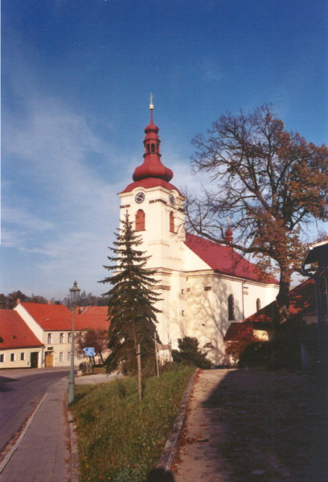
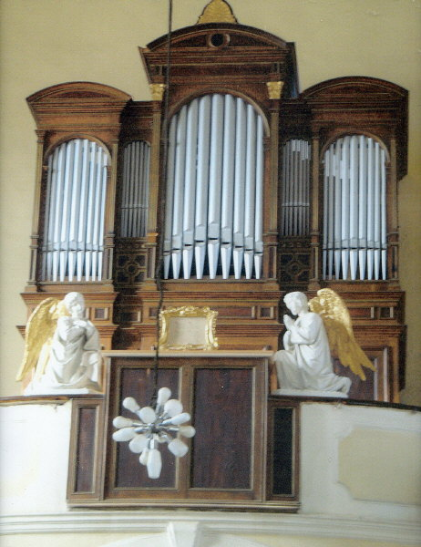
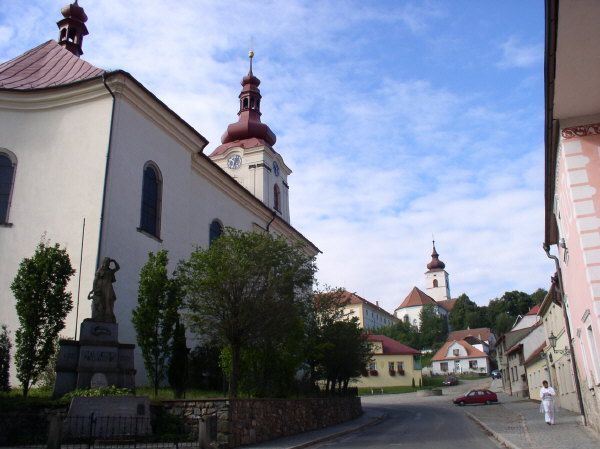
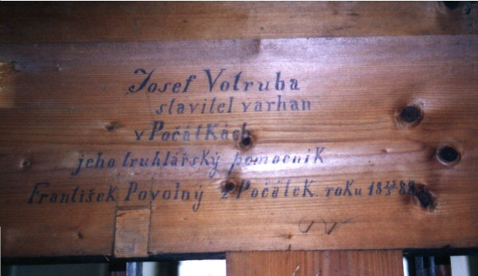
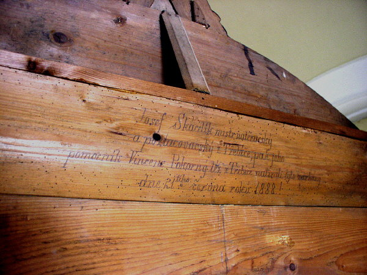
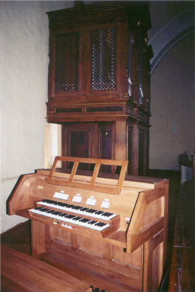
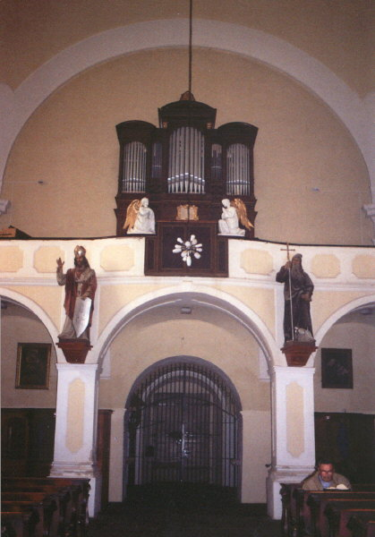

 |
 |
Brtnický kostel sv. Jakuba Většího byl založen ve
středověku, po několika požárech byl v letech 1776 – 1784 přestavěn do
dnešní podoby jednoduché barokní stavby. Kostel ukrývá mnohá významná
umělecká díla, např. pozdně gotickou dřevěnou skupinu "Kladení do
hrobu" pocházející z 1. třetiny 16. stol., renesanční kovovou lampu
věčného světla, pozlacenou křtitelnici a další, věnované Hynkem Brtnickým
z Valdštejna a Kateřinou Zajímačkou z Kunštátu v letech 1573 až 1596.
Významné jsou také kostelní obrazy a sochy, zejména Pieta z roku 1718
a Anděl Strážce z roku 1715, řezbářské práce brtnického sochaře Davida
Liparta. Farní kostel uchovává ostatky neznámého prvokřesťanského mučedníka,
nazývaného sv. Fidelius. Do Brtnice byly přeneseny z Říma r. 1732… Brtnice je mimo jiné pozoruhodná i blízkostí dalšího kostela – zámeckého kostela blahoslavené Juliány z rodu Collalto. V tomto kostele jsou velmi zajímavé památné barokní varhany, připisované Bedřichu Semrádovi (okolo roku 1740!). |
Původní
varhany v brtnickém kostele byly roku 1888 nahrazeny nástrojem novým,
jejichž stavitelem byl Josef Votruba z Počátek. Varhany měly jeden manuál
a pedál, kuželkové vzdušnice a mechanickou trakturu. Jednalo se o jediný
nástroj tohoto varhanáře a od počátku bylo zřejmé, že jeho stavbu nezvládl
příliš dobře. Přestože mechanické kuželkové systémy běžně patří mezi robustní
a spolehlivé, u tohoto nástroje byly nevhodně volené materiály, nedokonalá
konstrukce traktury i vzdušnice naopak příčinou nízké spolehlivosti a
časté poruchovosti. Již v prvním desetiletí svého života nástroj prodělal
rozsáhlou a poměrně nákladnou opravu a v následujících letech byl dále
opravován a přestavován. Část mechanické traktury byla nahrazena pneumatickou,
bylo doplněno tremolo. Nástroj mnoha zásahy dost utrpěl a proto bylo po
válce rozhodnuto o jeho nahrazení nástrojem novým. Shodou smutných okolností
však byla prakticky celá částka, nashromážděná na nové varhany, znehodnocena
krachem státních financí a následující měnovou reformou v roce 1953. Našetřit
celou sumu znovu se už brtnické farnosti v dalším půlstoletí nepodařilo
a tak Votrubovy varhany dále živořily na kůru. |
  Nápisy uvnitř varhanní skříně:
|
Počátkem nového tisíciletí již bylo nutné otázku
varhan trvale vyřešit. Řada varhanářů prohlásila původní nástroj za neopravitelný,
dílo zkázy dokonal červotoč, který zničil většinu dřevěných součástí vzdušnice,
traktury i část píšťal. Bylo proto rozhodnuto původní nástroj nahradit
novým a zachovat jen varhanní skříň. Z výběrového řízení na stavbu varhan
vyšla vítězně firma Jiřího Vaculína ze Vsetína. Ten navrhl nástroj se
dvěmi manuály a pedálem, elektrickou trakturou (vychází z podmínky zadání
na pohyblivost hracího stolu v rámci celé jedné poloviny kůru) s využitím
části původního píšťalového fondu. Po Velikonocích roku 2005 byl nástroj demontován, konzervována a restaurována varhanní skříň. Komplikací stavby nástroje byla vynucená kompletní výměna podlahy kůru (napadení dřevokazným hmyzem a celková zchátralost). Souběžně ve vsetínské dílně pokračovala výroba nástroje nového. Ten pak byl v průběhu měsíce září instalován na kůr a slavnostně požehnán 23. října 2005. |
|   |
| Dispozice nástroje: |
| I. manuál: |
Rozsah C-c4 |
II. manuál: |
Rozsah C- c4 |
Pedál: |
Rozsah C-f1 (30 tónů) |
|
| 1. |
Principál 8' |
13. |
Kryt 8' |
17. |
Subbas 16' |
|
| 2. |
Flétna 8' |
14. |
Copula 4' |
18. |
Bas krytý 8' |
|
| 3. |
Oktáva 4' |
15. |
Flétna lesní 2' |
19. |
Chorálbas 4' |
|
| 4. |
Roh 4' |
16. |
Oktáva 1' |
|||
| 5. |
Superoktáva 2' |
|||||
| 6. |
Sesquialtera 2x |
|||||
| 7. |
Mixtura 3x |
|||||
| 8. |
Tremolo I. man |
|||||
| Spojky: |
Pomocná zařízení: |
|||||
| 9. |
I/I 4' |
Piano |
||||
| 10. |
II/I 8' |
Mezzoforte |
||||
| 11. |
I/P 8' |
Forte |
||||
| 12. |
II/P 8' |
Pleno |
||||
| |
Volná kombinace |
|||||
Traktura elektropneumatická (tónová i rejstříková),
spojky elektrické, vzdušnice prvního manuálu zásuvková, druhý manuál a
pedál Unit. Ovládání tónových ventilů prvního manuálu výpustnými klínovými
míšky řízenými páčkovými elektromagnety Laukhuff, u Unitu rovněž výpustný
systém s obdélníkovými membránami a Reisnerovými magnety. Ovládaní zásuvek
je řešeno pomocí tahacích měchů.
Celý nástroj má 707 hrajících píšťal, z toho 610 v prvním manuálu a 97 v Unitu druhého manuálu a pedálu. V prospektu je navíc 32 němých píšťal. Ovládaní rejstříkové traktury pomocí sklopek v hlavě hracího stolu, přepínání kolektivů a volné kombinace pomocí tlačítek pod prvním manuálem. Charakteristika jednotlivých rejstříků:Principál 8’ – základní varhanní hlas. Píšťaly velké oktávy zinkové (část – prvních devět tvoří střední pole prospektu), zbývající cínové. Flétna 8’ – krytý flétnový rejstřík kulatého zvuku. Konstrukce kombinovaná, první tři oktávy z dřevěných píšťal s intonačním otvorem v rukojeti zátky, od c2 polokryté píšťaly a od c3 otevřené cínové píšťaly. Oktáva 4’– principálový hlas v oktávové poloze vůči principálu s píšťalami mírně užší menzury. Celý rejstřík je vystavěn z cínových píšťal. Roh 4’ – cínový rejstřík s kónickými píšťalami a tvrdším, mírně smykavým zvukem Superoktáva 2’ – další principálový hlas v oktávové poloze (o dvě oktávy výše) vůči Principálu. Společně s Principálem 8’ a Oktávou 4’ tvoří základ zvukové pyramidy nástroje. Sesquialtera 2x – kombinace dvou řad cínových píšťal v poloze kvinty 2 2/3’ a tercie 1 3/5’ hrající zdánlivě v sextách vůči hranému tónu. Výrazný rejstřík pro podbarvení sólové hry. Mixtura 3x – třířadý smíšený hlas, tvořící vrchol zvukové pyramidy nástroje. Mixtura je řešena jako kvintová a oktávová a je v celém rozsahu bez repetice. Kryt 8’, Copula 4‘, Flétna lesní 2‘, Oktáva 1‘ druhého manuálu a Subbas 16’, Bas krytý 8‘ a Chorálbas 4’ pedálu jsou tvořeny pomocí extenzí a transmisí z jediné 97 píšťalové řady (Unit). Konstrukce smíšená, první tři oktávy kryté dřevěné, zbytek cín, horní tři oktávy otevřené. Rozsah píšťalové řady je C0 až c6, poslední oktáva jednostopého rejstříku je repetující, ostatní jsou bez repetice. Spojky: I/I 4’ – oktávová spojka v prvním manuálu v rozsahu C-c3, II/I 8‘ spojka z druhého manuálu do prvního v základní poloze, I/P 8‘ a II/P 8‘ spojky z manuálů do pedálu (prvních 30 tónů, obě v základní poloze). Tremolo I. Man.
- výpustné tremolo s elektronickým řízením a možností nastavení frekvence
zákmitů uvnitř hracího stolu, působící na rejstříky prvního manuálu. |
| Varhany Vaculín Opus 7. – Jiří VACULÍN,
varhanářský mistr ze Vsetína Elektroinstalace, traktura, Ing. Petr BERNAT, asistent VŠB-TU z Ostravy Návrh, dispozice, organizace – Jan MAREK, ředitel kůru v Ostravě – Zábřehu |
Na dalších stránkách naleznete podrobný popis nástroje a malou reportáž z průběhu jeho stavby. Na samostatné stránce pak několik fotografií a dispozici barokních varhan v zámeckém kostele blahoslavené Juliany. ©2005 - Ing. Petr Bernat. |